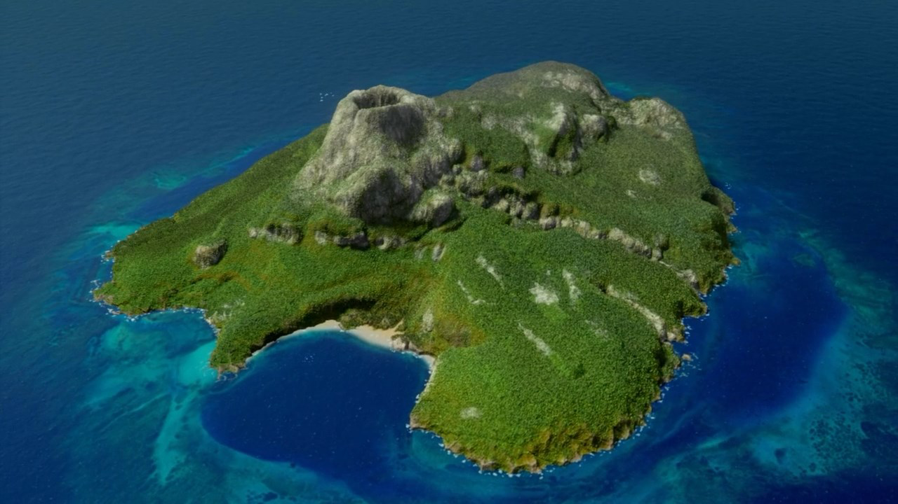

An island (or isle) is an isolated piece of habitat that is surrounded by a dramatically different habitat, such as water.Very small islands such as emergent land features on atolls can be called islets, skerries, cays or keys. An island in a river or a lake island may be called an eyot or ait, and a small island off the coast may be called a holm. Sedimentary islands in the Ganges delta are called chars.
Almost all of Earth's islands are natural and have been formed by tectonic forces or volcanic eruptions. However, artificial (man-made) islands also exist, such as the island in Osaka Bay off the Japanese island of Honshu, on which Kansai International Airport is located. Artificial islands can be built using natural materials (e.g., earth, rock, or sand) or artificial ones (e.g., concrete slabs or recycled waste).